Cruz Ride
A passenger-first ride-hailing experience, from destination to arrival.
Cruz Ride is the passenger-facing experience of a ride-hailing platform designed to help people book rides, connect with drivers, and manage their journeys from one place. The challenge was to design an experience that makes the journey feel more straightforward and dependable, from the moment a passenger enters a destination to the moment they arrive.
The Challenge
Every ride starts before a passenger gets in the car.
Booking a ride is only one part of the transportation experience.
Passengers also need to know how much a trip will cost, whether a driver is on the way, where to meet them, and what to do when something goes wrong. Unclear information or friction at any of these stages can make an otherwise simple journey stressful.
Cruz Ride brought these connected needs into one passenger experience. The design challenge was to make the key stages of a ride easier to understand and navigate while giving passengers the information and tools they need to manage their trips confidently.
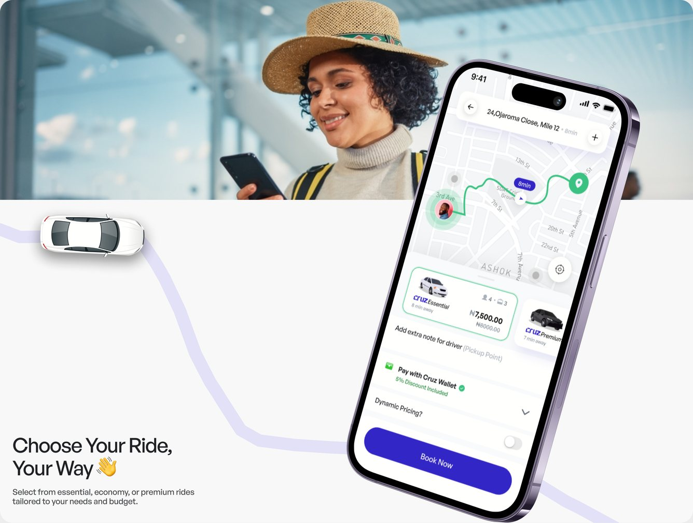
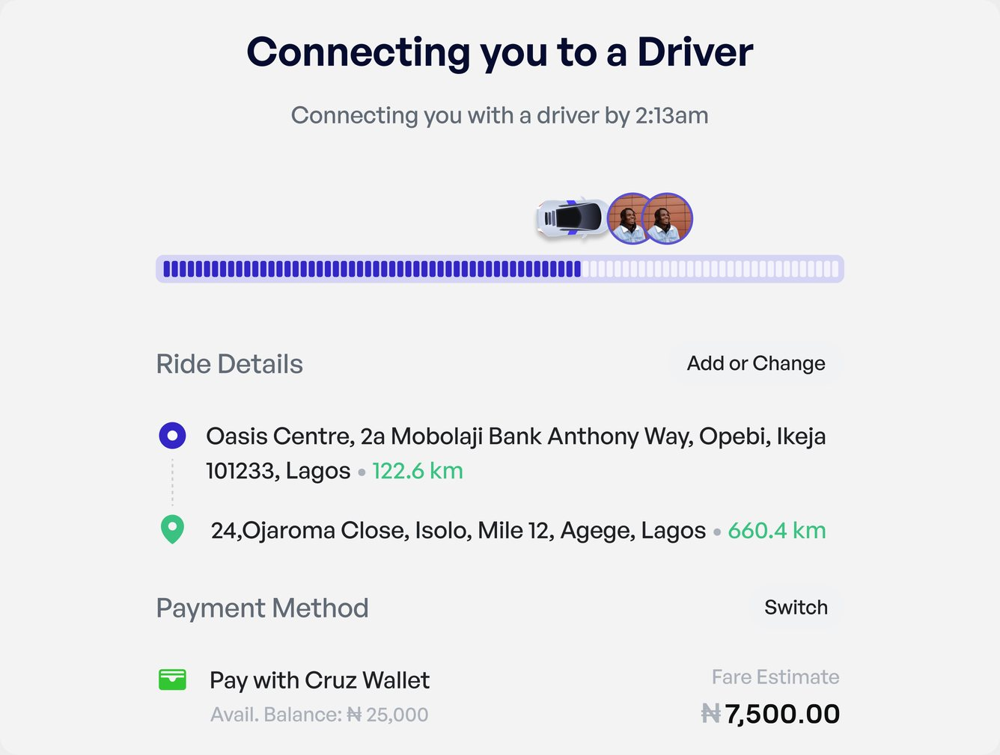
The Idea
Every ride with Cruz feels simple, smooth, and exactly how it should be.
The project explored several important parts of the passenger journey:
- Booking and destination selection: Making it easy to specify a destination and request a ride.
- Fare transparency: Helping passengers understand ride costs and available payment options.
- Driver matching and arrival: Communicating driver details and pickup progress.
- Safety and reassurance: Providing access to driver profiles, trip sharing, and driver reporting.
- Journey management: Supporting live trip tracking, scheduled rides, ride history, and receipts.
- Ongoing engagement: Incorporating promotions, referrals, and an in-app wallet.
- Help when things go wrong: Making support, ratings, and reviews part of the overall experience.
Together, these areas shaped the experience beyond the initial ride request.
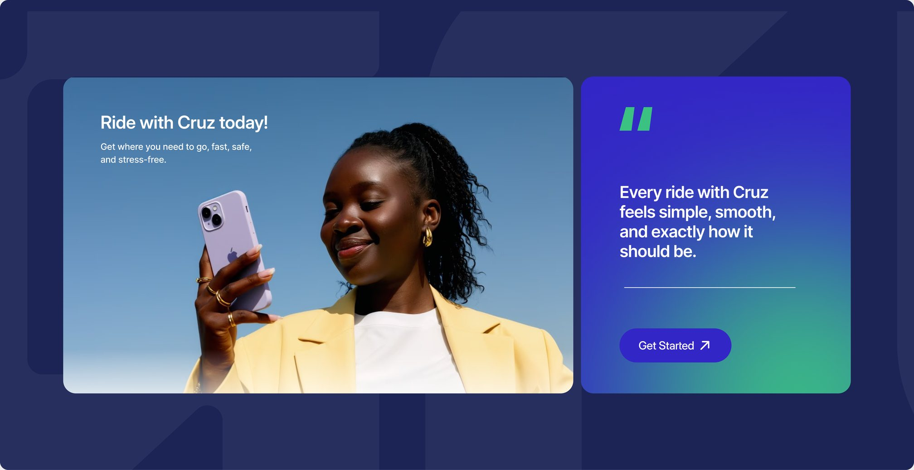
Understanding the passenger experience
Every stage of a ride asks for clarity, reassurance, and control.
The passenger journey extends beyond finding a driver. It includes several moments where people need clarity, reassurance, and control. Before the ride, passengers need to select their destination, understand the estimated fare, and choose how to pay. While waiting, they need information about their driver and the expected pickup.
During the journey, they need to follow their trip and, where necessary, share trip details or report a concern. After the ride, they may need a receipt, a way to rate their experience, or access to support. These stages provided a framework for examining the passenger experience through research and usability testing.
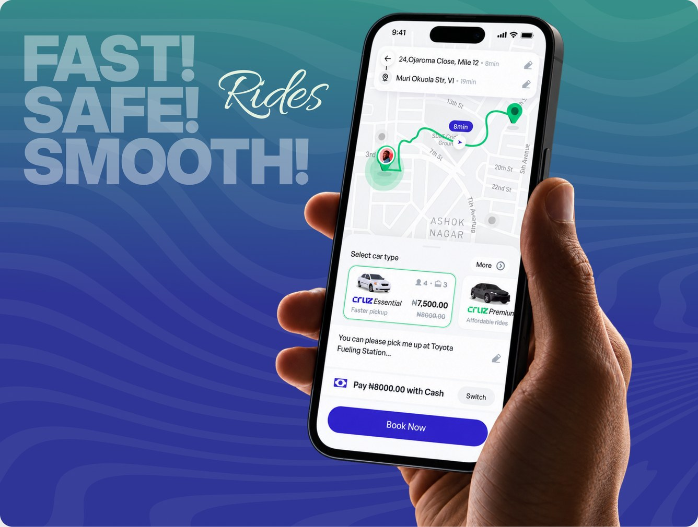
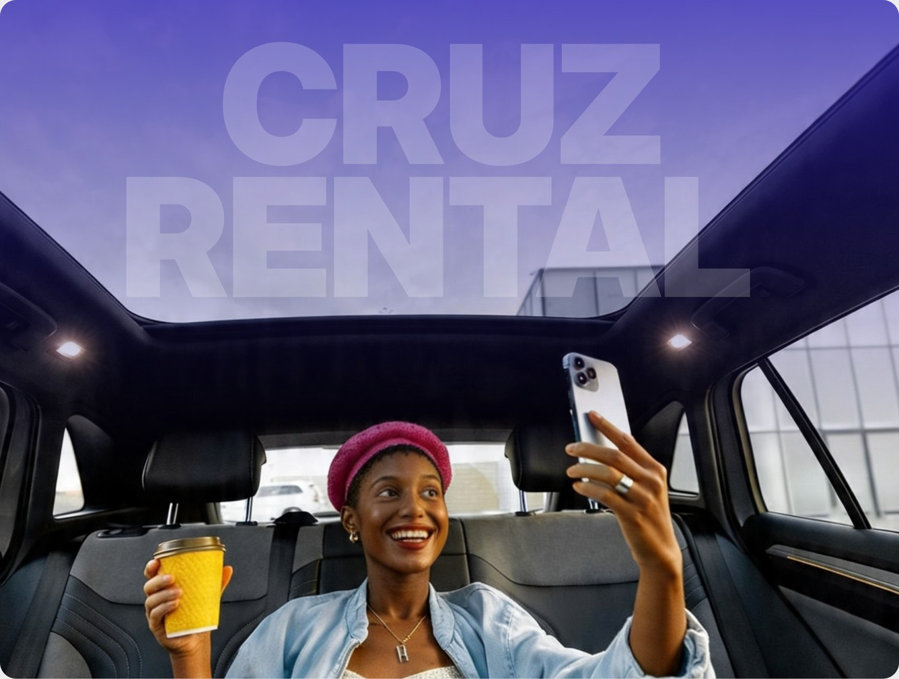
Booking
A clearer path from destination to booking.
Cruz Ride was designed to make requesting a ride feel straightforward, from choosing a destination to understanding the estimated fare and selecting a payment method. The experience brings these essential decisions together, helping passengers move from planning a journey to booking a ride with less friction.
The design goal was to bring these essential steps into a coherent flow, reducing unnecessary friction between deciding where to go and requesting transportation. Clear fare information helps them understand the expected cost before committing to a booking. Together, these interactions make the booking process easier to follow from beginning to end.
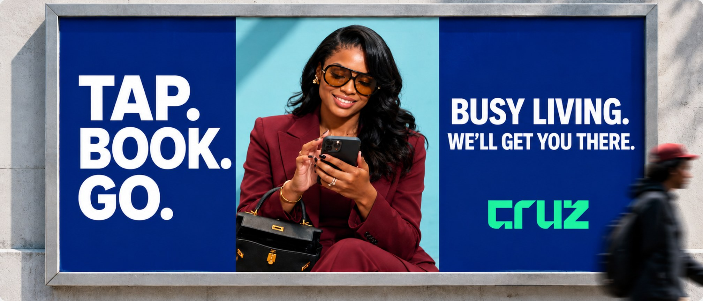
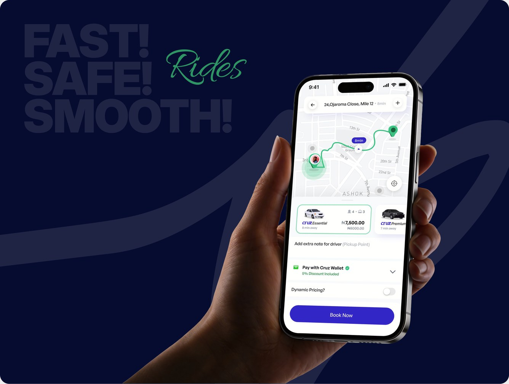
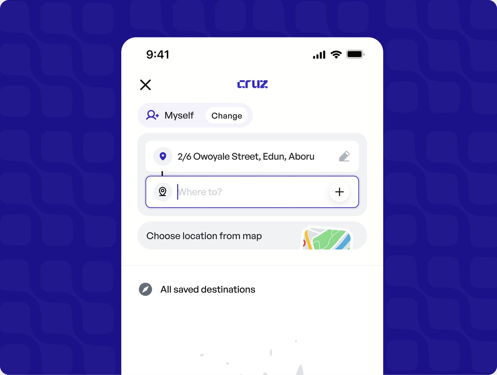
Pickup visibility
Knowing who’s coming makes waiting feel different.
Once a ride is requested, passengers need to know what happens next. Driver matching connects the passenger with an available driver, while arrival tracking provides visibility into the pickup process. Driver profiles make relevant information about the assigned driver accessible before the journey begins. Arrival tracking provides visibility into the pickup process as the driver makes their way to the meeting point.
Driver profiles make relevant information about the assigned driver accessible before the journey begins. Passengers can use these details to understand who they are meeting for their trip. Keeping driver information and arrival updates within the same experience makes the transition from booking to pickup easier to follow. The result is a more informed and predictable pickup experience.
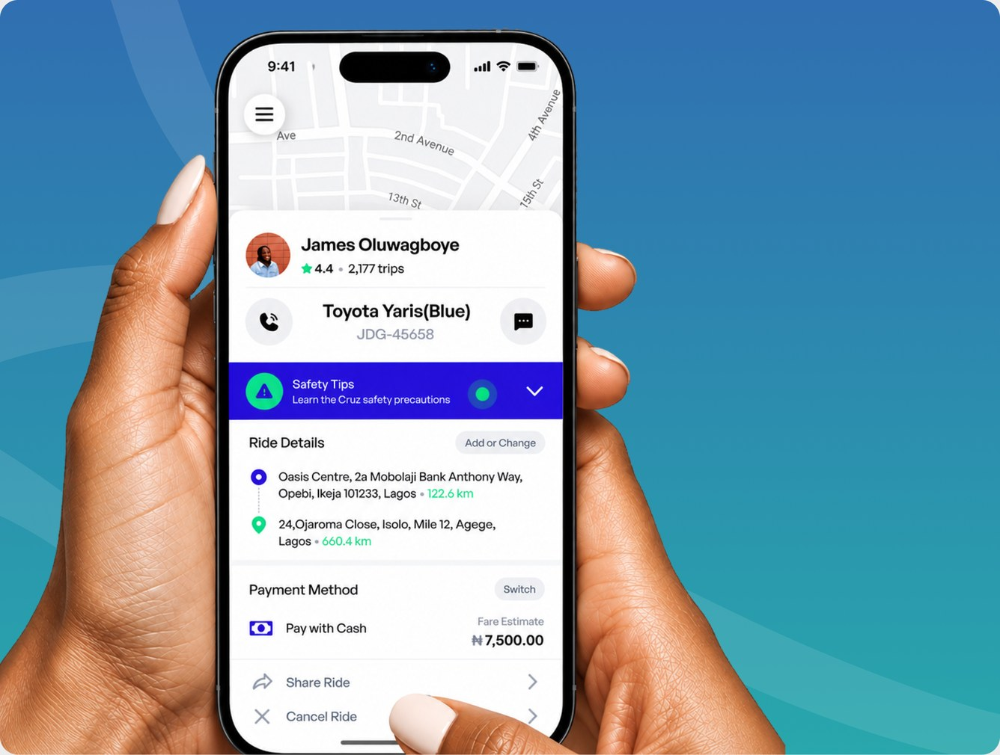
Safety and trust
Feeling informed is an important part of feeling safe.
Safety was considered across different stages of the passenger journey. Driver profiles allow passengers to access information about the person assigned to their ride before pickup. This provides useful context before passengers meet their driver.
Live trip tracking helps passengers follow their journey as it progresses toward the destination. Trip sharing provides a way to share journey details with someone else when additional visibility is needed. Driver reporting gives passengers a channel to raise concerns about an experience. These features address different moments in the journey rather than concentrating safety in a single interaction. Together, they give passengers more visibility and practical tools to manage their ride experience.
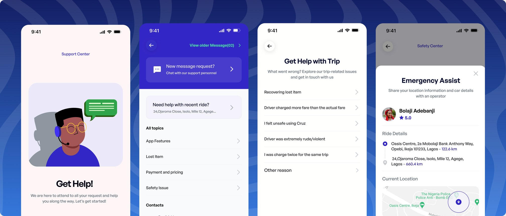
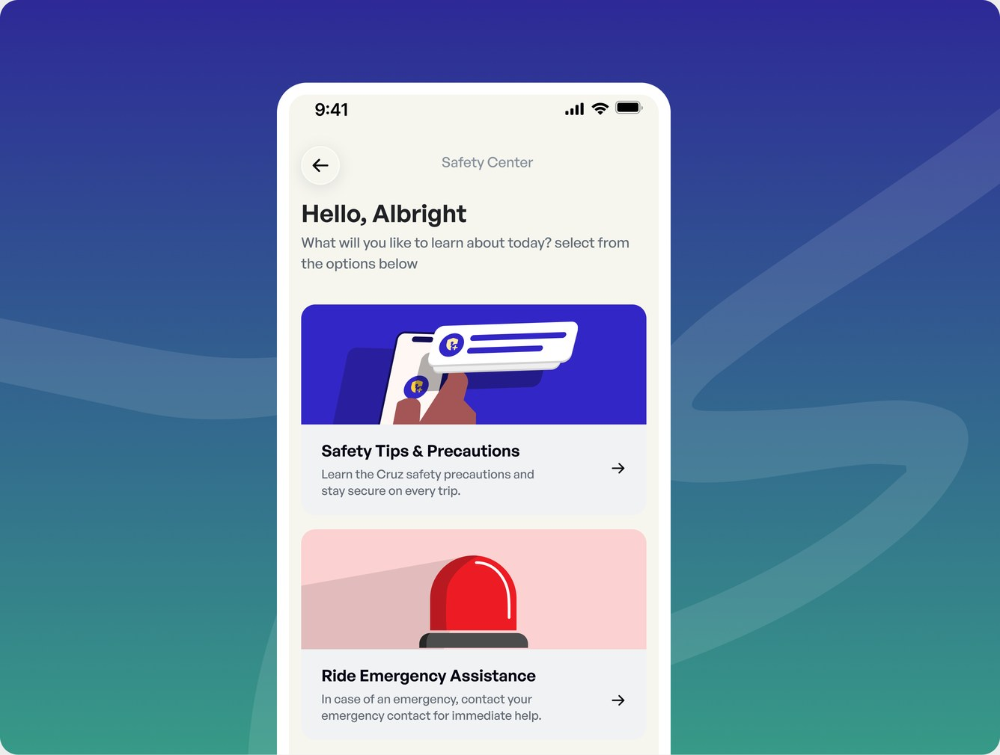
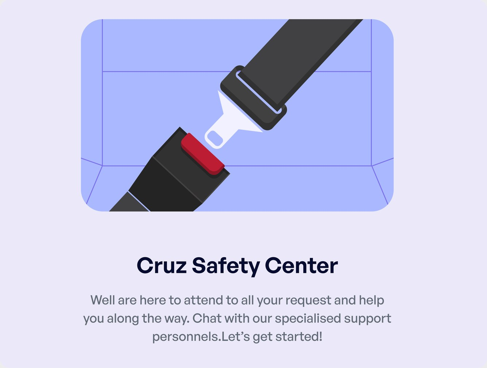
Payment and flexibility
Getting around should fit into your day.
Passengers have different routines, budgets, and preferences when arranging transportation. Fare estimates help them understand the expected cost before confirming a ride. The in-app wallet provides an additional way to manage payments within Cruz Ride. Scheduled rides support passengers who want to arrange transportation ahead of time instead of waiting until they are ready to leave.
This is particularly useful when a journey needs to fit around a planned activity or appointment. Promotions introduce incentives that passengers can use when booking eligible rides. Referral rewards also encourage existing users to introduce the service to other people. Together, these features support a more flexible experience around the practical and financial aspects of getting from one place to another.
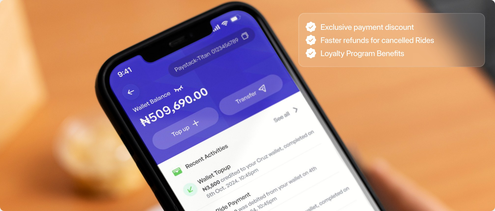
Post-ride experience
The experience shouldn’t end when the ride does.
Completing a journey is not always the final interaction a passenger needs to have with a ride-hailing service. Ride history allows passengers to revisit previous trips and find relevant journey information. This gives them a convenient place to look back at their travel activity. Receipts provide a record of completed rides and their associated costs.
Ratings and reviews give passengers an opportunity to share feedback about their experience. These interactions also create a channel for communicating how a ride went. Support provides a way to ask questions or seek assistance when something needs attention after a trip. By keeping these tools accessible after arrival, Cruz Ride supports passengers beyond the immediate booking and travel experience.
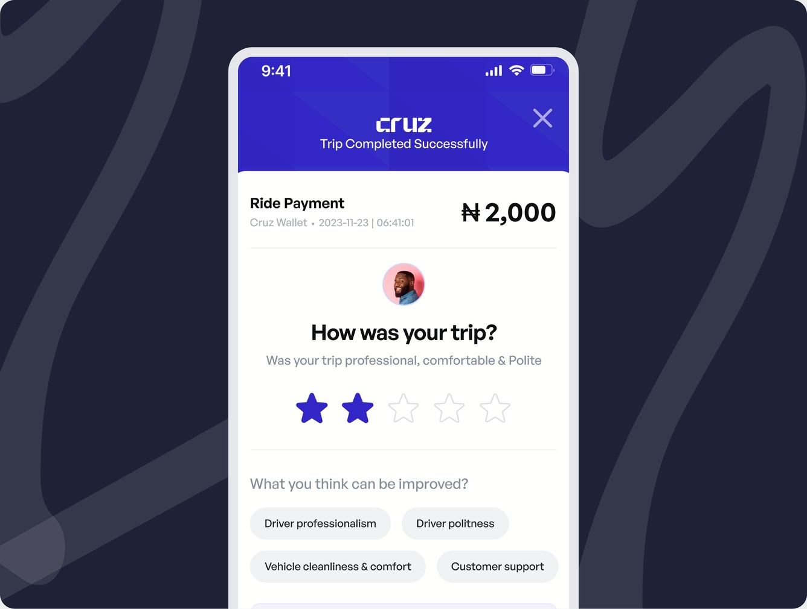
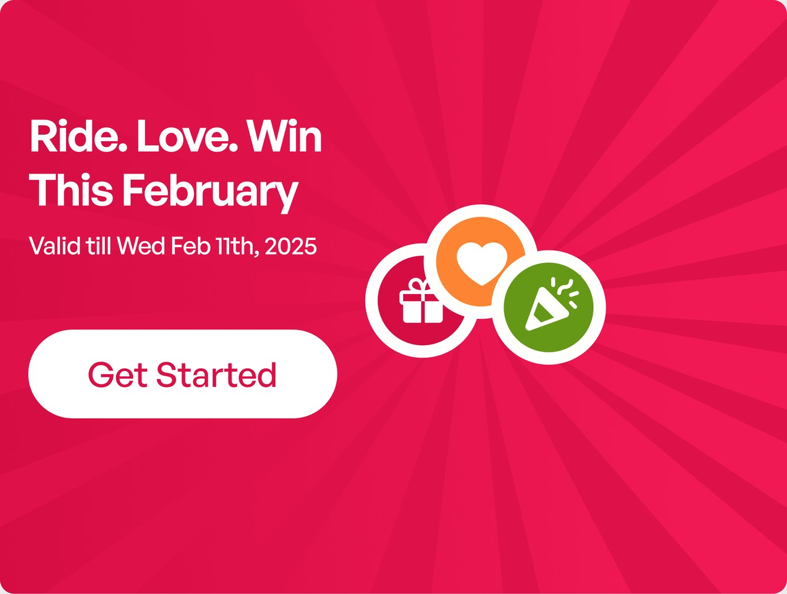
A connected journey
Every interaction should feel like part of the same journey.
Cruz Ride brings together the different interactions passengers encounter when arranging and taking a ride. The experience begins with destination selection and booking, giving passengers a place to review their journey details before requesting transportation. From there, driver matching and arrival tracking help them follow the transition from booking to pickup. Live trip tracking continues that visibility once the journey is underway.
Safety features, including trip sharing and driver reporting, provide additional tools at relevant moments. After arriving, passengers can access ride history, review receipts, leave feedback, or contact support. Connecting these touchpoints creates a more cohesive passenger experience within one platform.
The outcome
An everyday ride, made refreshingly simple.
Cruz Ride brought together the essential parts of booking and taking a ride in an experience that users found seamless and thoughtfully designed. From selecting a destination and reviewing fares to tracking a driver and managing a completed trip, the experience gave passengers a clear path through each stage of their journey. User feedback highlighted the ease of using the app, with users describing the experience as seamless and appreciating how well the product was designed.
This focus on usability translated into positive user feedback, with 98% user satisfaction, reflecting how well the experience met passengers’ needs. These responses reflected the importance of getting the everyday details right, not just making the core functionality work. For us, the outcome was a ride-hailing experience that users could navigate with ease and felt good about using.
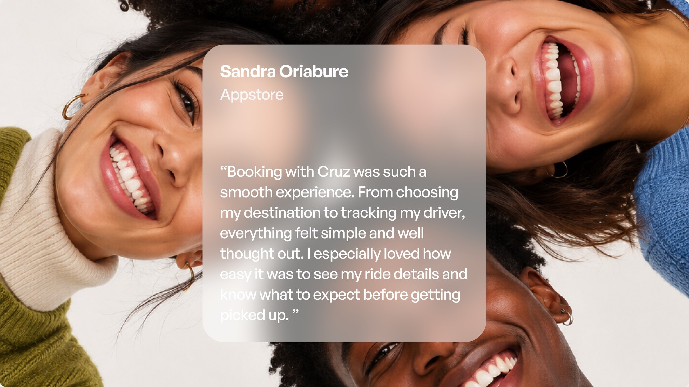
Beyond the Screens
Good design is about the moments people don’t have to think twice about.
Working on Cruz Ride reminded me that good product design goes beyond making an interface look good or a task feel easy. It means understanding the little things that matter to people, like knowing how much a ride will cost, identifying their driver, and feeling informed throughout the journey. I learned to look at the entire user journey rather than treating each screen as a separate design problem.
Through research and collaboration with the team, I learned the importance of considering user feedback alongside design decisions rather than relying on assumptions. The project also showed me how small details, such as knowing when a driver will arrive or finding a past receipt, can shape someone’s experience. Ultimately, Cruz Ride helped me connect individual interface decisions to the bigger picture of how people use a product in their everyday lives.
The project reinforced that even small details, such as knowing when a driver will arrive or being able to find a past receipt, can make a difference in how people experience a service. Most importantly, Cruz Ride helped me grow as a product designer by teaching me to connect individual interface decisions to the bigger picture of how people use a product in their everyday lives.
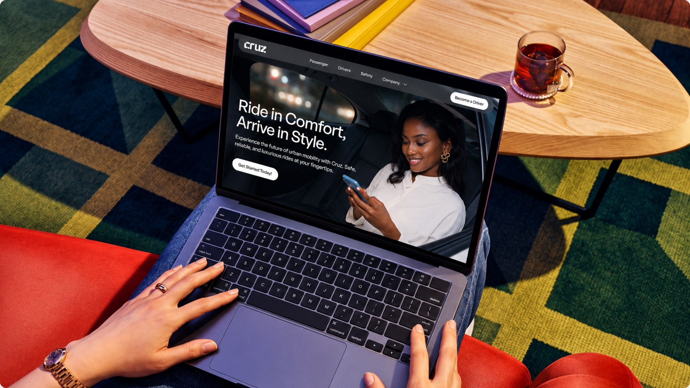
Up Next:
Ovaro
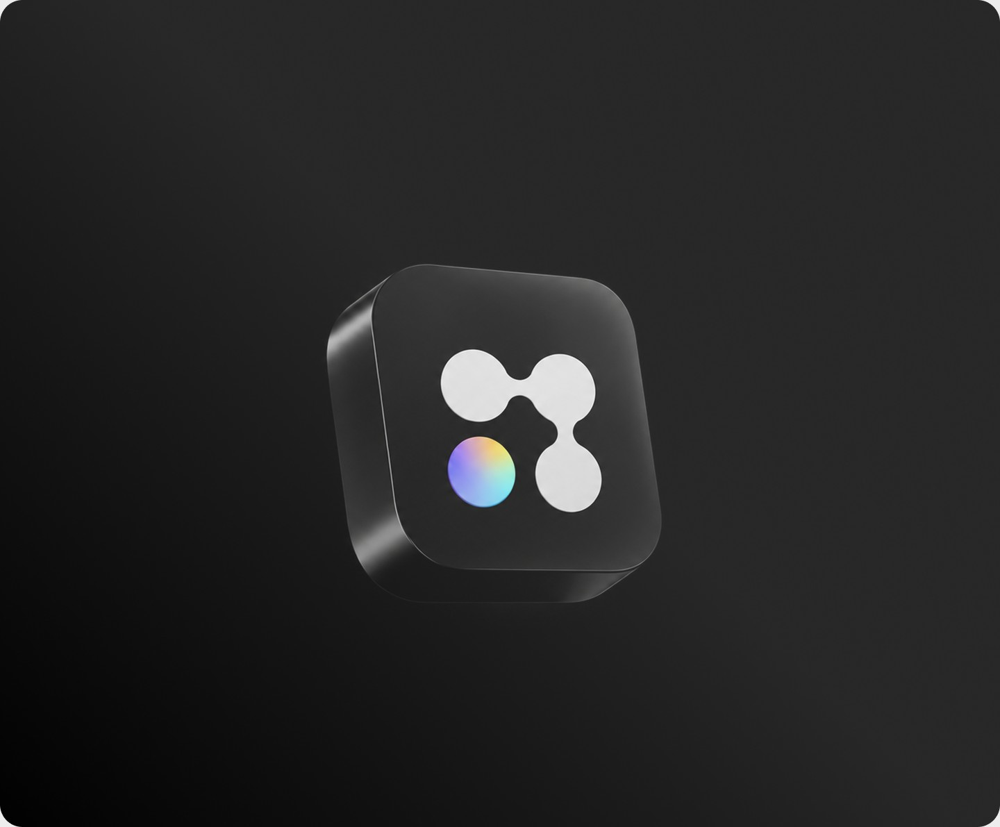
Ovaro is a personal finance management app that helps users track expenses, manage invoices, monitor spending, and stay on top of their finances through a clear, intuitive dashboard.
 Still cooking. Worth the wait.
Still cooking. Worth the wait.